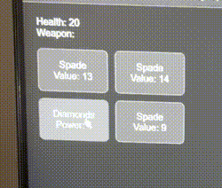
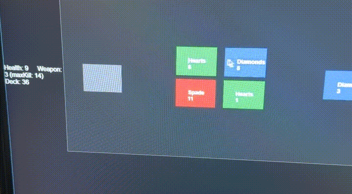
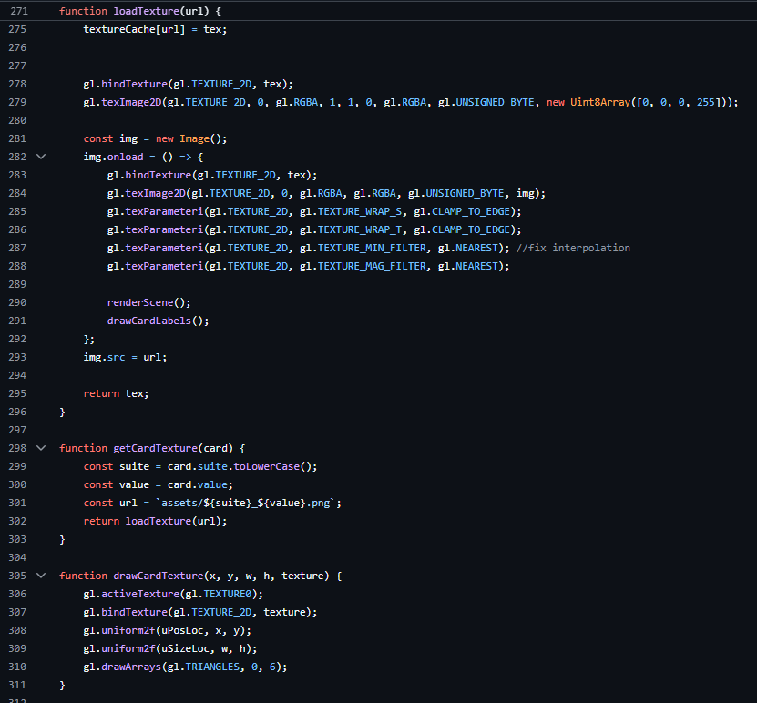
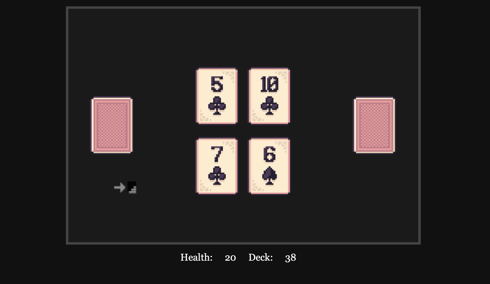

~ 12/4/2025 - 12/9/2025
Scoundrel was the second major project I've made while in my Undergrad. It served as a final project for my
Computer Graphics course. This class had a bunch of ups and downs, mainly because our professor dove us headfirst into WebGL and Javascript
without anyone else having any kind of experience with the language or the WebGL library. Combined with the weird ways browsers try to automatically
fix any errors in code, it's really easy to miss a simple bug. WebGL has very particular parameters too. In the end, it was a fun project to try, and I have plans
to expand upon it now that the game can be played on Kash Projects!
I ran into the game while looking for different card games to play when I was bored, Scoundrel itself was not even my first choice for the computer graphics project;
the moment I started playing, the ideas started flowing easily about the development. That was when I knew I had to at least try. To those who have tried making a game before -
especially from scratch - would definitely understand how tedious and difficult even a simple game like this one would be difficult to create especially in 5 days as a full time student
and at a full time job.
Before I talk about the development process,
Scoundrel was created by Zach Gage and Kurt Bieg, and the rules can be found here!
Where to Begin?
Anytime you plan for a game (or any project for that matter) write so many features and elements that you think are necessary, like an interactive menu screen, leaderboard, sounds,
textures, animations, the list can be endless. However that list can get overwhelming so fast and what would be a small project quickly cascades into something you don't even know where to
begin. I've mentioned this before, but seriously, sometimes you just have to take a step back and just start simple.
Starting Out
Overwhelmed with possibility, I had to remind myself multiple times to be simple. The game does not need to be the most polished, nice-looking revolutionary thing out there. I just needed
something rugged to showcase the mechanics first and iron out any bugs from the code. When writing out the fundamentals of the game, it can be listed out as:
- The constant variables (Health, Weapon, Durability)
- A "deck" of cards with random drawing for room generation
- Basic interactivity (clickable boxes, digestible UI)
Those three points alone give me a great starting point. I did not need a start screen or game over screen, and basic logical bugs like your health going beyond zero
can be overseen at this stage cause all we need is for our core functions to work sufficiently before we add complexity.

After about two days of solid work, you can see the format was incredibly rugged, no colors, no textures, just text to tell me what "card" I am looking at
and play the game to test the mechanics. It was really fun to see even this much on the screen starting out, as the work I was putting out
was no longer boilerplate copy/pasted from my professor to work on homework, I was officially on my own in an endless sandbox.
A Little More Each Time
Day 3 primarily consisted of rapid prototyping. Constantly adding little things on top of the other, slowly but surely, I was getting somewhere. By adding colors to the blocks it was easier
for a user to determine if a "card" was used for healing/support, or if it was an enemy type. At this point I was also working on the game board itself and figuring some type of layout that would be
easy for the user to see their health and weapon card, the remaining cards in the dungeon and also the board table itself. I was trying to frame the table, so the user thinks the cards are laying on a board rather than
just floating.

Card Textures and Polishing
Day 4 was where the project really came together. I thoroughly enjoyed attatching the textures to the clickboxes in WebGL. Adding the feature was frustrating at first, because trying to understand how WebGL
takes the coordinates of an image and splices them onto the vertices is really hard to grasp in my head. I thought it would be so cool to create my own custom textures, but for the sake of getting
the project done on time, I had to use some free open source textures elsewhere as placeholder (credit goes towards Nikoichu for this one!). When I revisit this project
(soon!) I am definitely going to add my own textures, I just think that will be so cool to do.

This part is not necessary to know but I still find it interesting - This is the real bread and butter for loading the card textures and placing them onto the boxes that become the interactive cards on screen.
To put simply, lines 271 - 288 grab a card image from the asset folder into a WebGL texture and loads them into memory, configures those values onto a buffer (defined earlier in the program),
and contains the vertices and coordinates of how the card should look when mapped onto the card. Lines 298 - 310 with the respective functions getCardTexture and drawCardTexture simply take values from the buffer
and maps them onto appropriate card vertices.

With that explanation out of the way, this is what you see when you play the game! It's pretty cool and although simple, I think it's elegant in that way. Once I got textures and rendering out of the way, the game
was pretty much done at this point. I had spent the remainder of Day 5, just polishing any bugs that I found, increasing the sizes of the cards, and changing the layout slightly to make it more navigable for the user.
It was at this point that I finally added a "Play Game","Game Over" and "Win" screens. Even now writing this post, I remember the immense satisfaction I had creating this game and also finishing this project. This was also
the last project I wrote before graduating a week later and I felt overjoyed that I had such an awesome project made to finish off my Undergrad with. Nothing major or revolutionary, but something I got to passionately work on even if it was
made quickly.
Final Thoughts and Going Forward
When presenting the project to my class, I was nervous how it would be recieved at first because the rules for scoundrel can be kind of weird to understand at first, but after a few runs it's easy to catch on. I didn't want to throw anyone off from the game logic
to influence how polished my game was running. Instead, everyone was super supportive and caught on rather quickly! All my classmates wanted to try to beat it too after I tacked on how difficult it is to actually win (it really is kind of hard!). At that point on
I kept theorizing how I could expand on this project further to support playing it online instead of relying on those curious to play to know how to copy a GitHub repository and run LiveServer to play. I quickly connected the dots with the previous idea to have my own
website. Fast forward to now, it's possible! You can play my WebGL version of Scoundrel here!
Now that Scoundrel is on Kash Projects, I am working on a separate backend of this website to utilize an API that will support a leaderboard and account functionality to Scoundrel. Which counts as it's own project.
This combines many technologies and programming principles utilized in businesses, so I am absolutely excited to bring it to life and post about it the future.
For now, you can find more projects here! Thanks for reading!